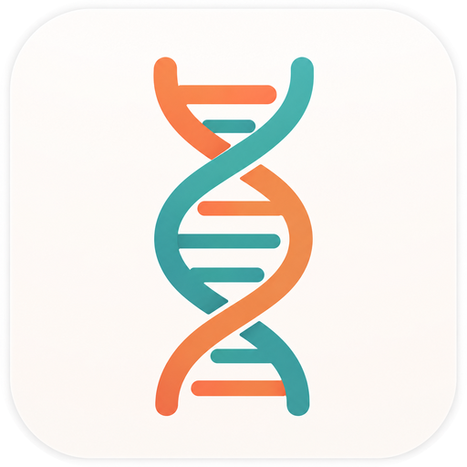

供应商原生为 Anthropic Messages API 就选 Anthropic Messages（直连，不转换格式）；使用 Chat Completions 协议就选 Chat；使用 Responses API 就选 Responses；使用 Gemini generateContent 协议就选 Gemini Native。Chat、Responses 与 Gemini Native 均需开启路由接管才能转换为 Anthropic Messages。
选择写入配置的认证环境变量名。
显示名称只影响界面模型菜单的呈现。
用于未明确落到 sonnet、opus、haiku、fable 角色的请求。使用第三方或中转端点时建议填写，否则这些请求会按原始 Claude 模型名透传给上游，可能因上游无此模型而报错。
隐藏到托盘保持后台驻留，或随窗口一起退出程序
登录桌面后自动驻留托盘
形如 http://127.0.0.1:7890；claude.ai 登录与令牌交换需要可达的出口，供应商推理保持直连
开启后使用应用自建的最小化、最大化或还原、关闭按钮；关闭后沿用系统窗口模式
无法访问 claude.ai 时让组织探测一秒内失败，界面正常启动；设置代理后此项忽略